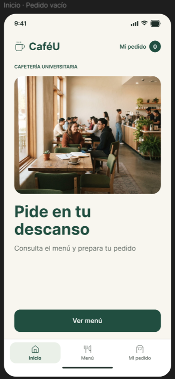
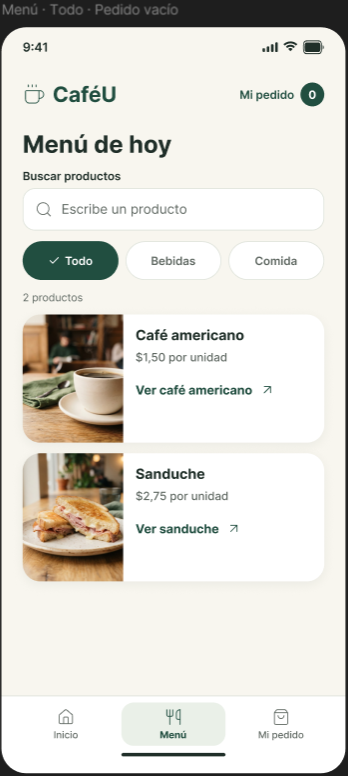
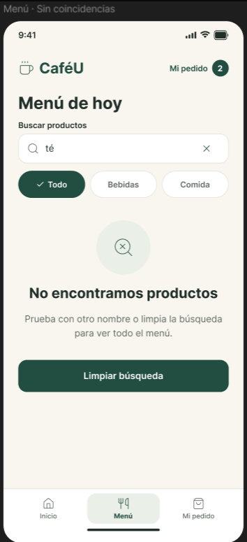
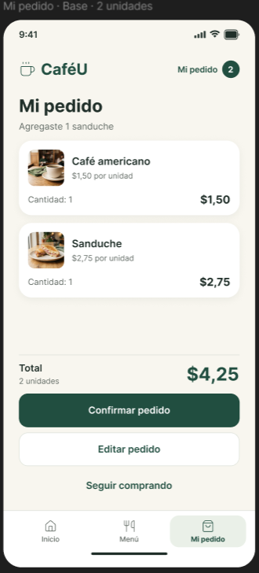
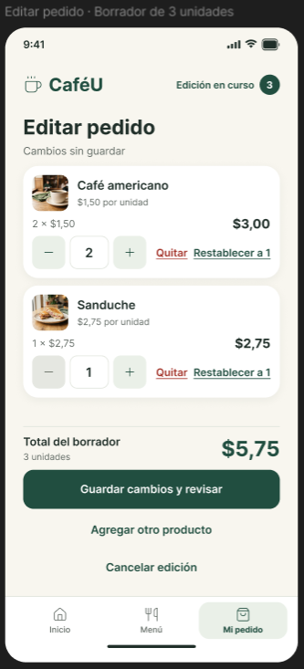
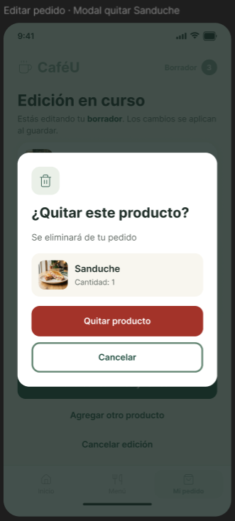
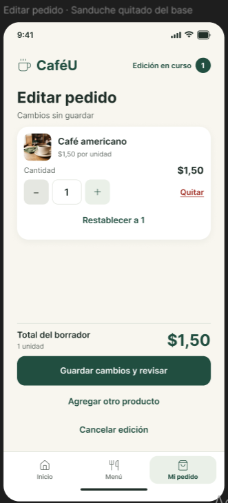
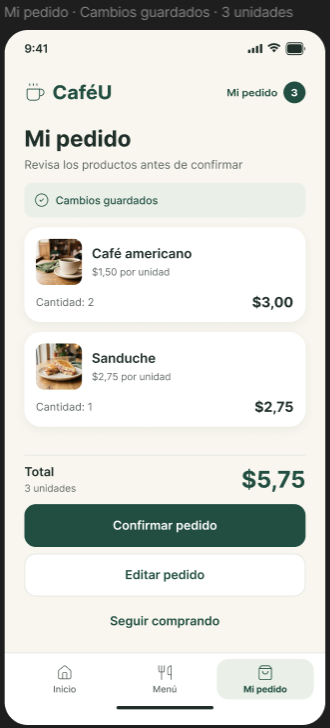
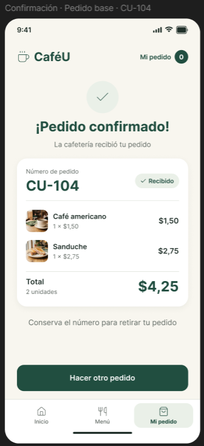
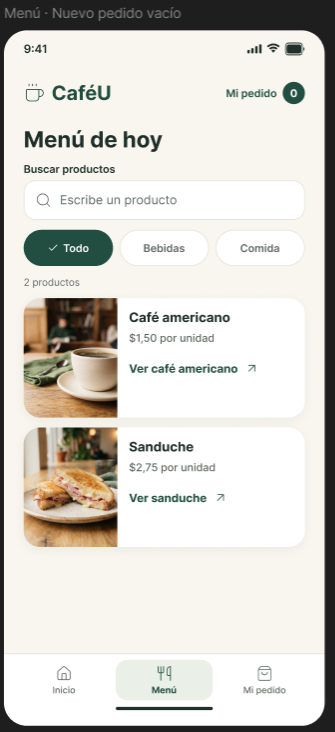

Visor documental de las capturas del equipo. Este archivo no es una nueva implementación del prototipo ni permite medir interacción. Para las tareas se utiliza Figma en modo Presentación.
Abrir CaféU en Figma · Repositorio de origen









